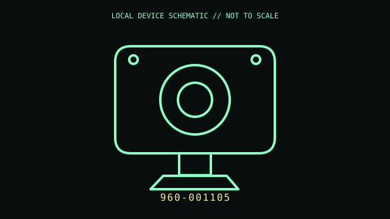

[ IMAGING AND AUDIO-CAPTURE PERIPHERALS // IDENTIFIED COMPONENT ]
Logitech BRIO 4K Pro Webcam
USB webcam with 4K/UHD image capture, autofocus, field-of-view options, and an infrared sensor for supported Windows Hello hosts.

MODEL IDENTIFICATION: Manufacturer identity: 960-001105. Compare the unit label, regional suffix, and revision against the manufacturer's manual before repair or compatibility claims.
Model specifications
| Catalog subcategory | Imaging and audio-capture peripherals |
|---|---|
| Exact model / ID | 960-001105 |
| Model-specific features | USB 3.0 Type-A connection (backward-compatible USB 2.0); up to 4K/30 fps, 1080p/60 fps, or 720p/90 fps; dual omnidirectional microphones; privacy shutter. |
| Interface and host support | Video modes depend on USB bandwidth, host software, and lighting. Infrared/Windows Hello requires compatible Windows hardware and setup; USB 2.0 may constrain format availability. |
| Revision / driver caveat | Identify part number 960-001105; BRIO revisions and similarly named Brio 500/4K models differ. Confirm the attached cable and current Logitech firmware/software for the host. |
Preservation and service notes
Keep the lens and IR window free of fingerprints; use a clean microfiber cloth only. Preserve the privacy shutter and monitor clip, and avoid bending the USB cable at the camera mount.
Record the as-found label, accessories, host OS, driver/firmware version, and test method. Separate observed condition from published specifications; do not treat family-level feature claims as proof of a unit's revision.
Primary manufacturer documentation
- Logitech BRIO 4K Webcam — product pageManufacturer specification for product number 960-001105 and supported video modes.
- Logitech BRIO setup guideManufacturer setup guide with connection and mounting notes.
Manufacturer pages may change or retire. Preserve a copy of the applicable manual and note its revision when documenting a physical unit.